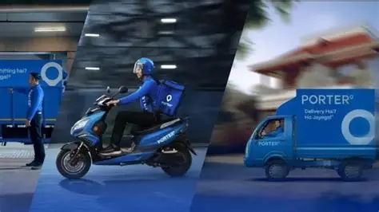
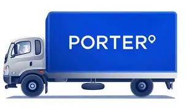

OUR GROWING NETWORK
21+ CITIES | 7.5L+ DRIVER PARTNERS | 10000+ ENTERPRISE CLIENTS
OUR CLIENTS


Porter is trusted by leading businesses across a wide range of industries, providing reliable and efficient logistics solutions tailored to their transportation needs. Our client portfolio includes Cars24, a leading automotive platform for buying and selling pre-owned vehicles; DP World, a global provider of end-to-end supply chain and logistics solutions; Furlenco, a furniture rental and lifestyle brand; Infra.Market, a technology-driven construction materials platform; Neeman's, a sustainable footwear and lifestyle brand; and NEWME, a fast-growing fashion and apparel company. By supporting these organizations with dependable logistics services, Porter plays a vital role in ensuring timely deliveries, smooth operations, and exceptional customer experiences across diverse business sectors.
WE ARE TRANSFORMING CITIES
Our business is growing by the minute! We are now present in 21+ cities and have an extensive fleet base of more than 7.5L driver-partners! We have established ourselves as a trusted goods transportation service provider for big or small businesses, eCommerce merchants, supermarkets, Kirana store owners and many more for their business goods transportation services. Our loyal customers across 21+ cities serve as a testament of our top notch service and ever expanding presence.
- Ahmedabad
- Bangalore
- Chandigarh
- Chennai
- Coimbatore
- Hyderabad
- Delhi
- Indore
- Kanpur
- Jaipur
- Kochi
- Lucknow
- Kolkata
- Ludhiana
- Mumbai
- Nagpur
- Nashik
- Pune
- Surat
- Trivandrum
- Vadodara
- Visakhapatnam
FOR ANY MORE QUERY
Reach us out on 789888888 today to know more about us and get benefits from our managed services offering. Our expert team will be happy to know more about your business and recommend the best possible solutions tailored to your logistics needs.
